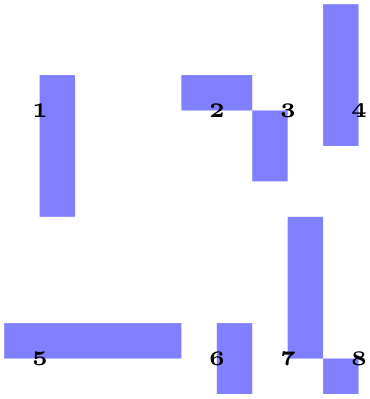
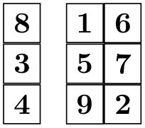
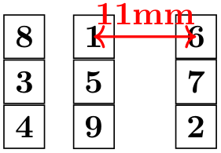
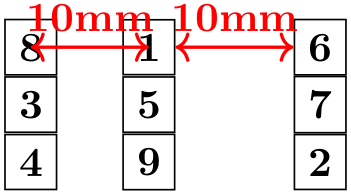

The TikZ and PGF Packages
Manual for version 3.1.9a
The Basic Layer
106 Matrices
\usepgfmodule{matrix} % LaTeX and plain TeX and pure pgf
\usepgfmodule[matrix] % ConTeXt and pure pgf
The present section documents the commands of this module.
106.1 Overview¶
Matrices are a mechanism for aligning several so-called cell pictures horizontally and vertically. The resulting alignment is placed in a normal node and the command for creating matrices, \pgfmatrix, takes options very similar to the \pgfnode command.
In the following, the basic idea behind the alignment mechanism is explained first. Then the command \pgfmatrix is explained. At the end of the section, additional ways of modifying the width of columns and rows are discussed.
106.2 Cell Pictures and Their Alignment¶
A matrix consists of rows of cells. Cells are separated using the special command \pgfmatrixnextcell, rows are ended using the command \pgfmatrixendrow (the command \\ is set up to mean the same as \pgfmatrixendrow by default). Each cell contains a cell picture, although cell pictures are not complete pictures as they lack layers. However, each cell picture has its own bounding box like a normal picture does. These bounding boxes are important for the alignment as explained in the following.
Each cell picture will have an origin somewhere in the picture (or even outside the picture). The position of these origins are important for the alignment: On each row the origins will be on the same horizontal line and for each column the origins will also be on the same vertical line. These two requirements mean that the cell pictures may need to be shifted around so that the origins wind up on the same lines. The top of a row is given by the top of the cell picture whose bounding box’s maximum \(y\)-position is largest. Similarly, the bottom of a row is given by the bottom of the cell picture whose bounding box’s minimum \(y\)-position is the most negative. Similarly, the left end of a column is given by the left end of the cell whose bounding box’s \(x\)-position is the most negative; and similarly for the right end of a column.

\begin{tikzpicture}[x=3mm,y=3mm,fill=blue!50]
\def\atorig#1{\node[black] at
(0,0) {\tiny #1};}
\pgfmatrix{rectangle}{center}{mymatrix}
{\pgfusepath{}}{\pgfpointorigin}{}
{
\fill (0,-3) rectangle
(1,1);\atorig1
\pgfmatrixnextcell
\fill (-1,0) rectangle
(1,1);\atorig2
\pgfmatrixnextcell
\fill (-1,-2) rectangle
(0,0);\atorig3
\pgfmatrixnextcell
\fill (-1,-1) rectangle
(0,3);\atorig4
\\
\fill (-1,0) rectangle
(4,1);\atorig5
\pgfmatrixnextcell
\fill (0,-1) rectangle
(1,1);\atorig6
\pgfmatrixnextcell
\fill (0,0) rectangle
(1,4);\atorig7
\pgfmatrixnextcell
\fill (-1,-1) rectangle
(0,0);\atorig8
\\
}
\end{tikzpicture}
106.3 The Matrix Command¶
All matrices are typeset using the following command:
\pgfmatrix{⟨shape⟩}{⟨anchor⟩}{⟨name⟩}{⟨usage⟩}{⟨shift⟩}{⟨pre-code⟩}{⟨matrix cells⟩} ¶
This command creates a node that contains a matrix. The name of the node is ⟨name⟩, its shape is ⟨shape⟩ and the node is anchored at ⟨anchor⟩.
The ⟨matrix cell⟩ parameter contains the cells of the matrix. In each cell drawing commands may be given, which create a so-called cell picture. For each cell picture a bounding box is computed and the cells are aligned according to the rules outlined in the previous section.
The resulting matrix is used as the text box of the node. As for a normal node, the ⟨usage⟩ commands are applied, so that the path(s) of the resulting node is (are) stroked or filled or whatever.
Specifying the cells and rows. Even though this command uses \halign internally, there are two special rules for indicating cells:
1. Cells in the same row must be separated using the macro \pgfmatrixnextcell rather than &. Using & will result in an error message.
However, you can make & an active character and have it expand to \pgfmatrixnextcell. This way, it will “look” as if & is used.
2. Rows are ended using the command \pgfmatrixendrow, but \\ is set up to mean the same by default. However, some environments like {minipage} redefine \\, so it is good to have \pgfmatrixendrow as a “fallback”.
3. Every row including the last row must be ended using the command \\ or \pgfmatrixendrow.
Both \pgfmatrixnextcell and \pgfmatrixendrow (and, thus, also \\) take an optional argument as explained in the Section 106.4
\begin{tikzpicture}
\pgfmatrix{rectangle}{center}{mymatrix}
{\pgfusepath{}}{\pgfpointorigin}{}
{
\node {a}; \pgfmatrixnextcell \node {b}; \pgfmatrixendrow
\node {c}; \pgfmatrixnextcell \node {d}; \pgfmatrixendrow
}
\end{tikzpicture}
Anchoring matrices at nodes inside the matrix. The parameter ⟨shift⟩ is an additional negative shift for the node. Normally, such a shift could be given beforehand (that is, the shift could be preapplied to the current transformation matrix). However, when ⟨shift⟩ is evaluated, you can refer to temporary positions of nodes inside the matrix. In detail, the following happens: When the matrix has been typeset, all nodes in the matrix temporarily get assigned their positions in the matrix box. The origin of this coordinate system is at the left baseline end of the matrix box, which corresponds to the text anchor. The position ⟨shift⟩ is then interpreted inside this coordinate system and then used for shifting.
This allows you to use the parameter ⟨shift⟩ in the following way: If you use text as the ⟨anchor⟩ and specify \pgfpointanchor{inner node}{some anchor} for the parameter ⟨shift⟩, where inner node is a node that is created in the matrix, then the whole matrix will be shifted such that inner node.some anchor lies at the origin of the whole picture.
Rotations and scaling. The matrix node is never rotated or scaled, because the current coordinate transformation matrix is reset (except for the translational part) at the beginning of \pgfmatrix. This is intentional and will not change in the future. If you need to rotate or scale the matrix, you must install an appropriate canvas transformation yourself.
However, nodes and stuff inside the cell pictures can be rotated and scaled normally.
Callbacks. At the beginning and at the end of each cell the special macros \pgfmatrixbegincode, \pgfmatrixendcode and possibly \pgfmatrixemptycode are called. The effect is explained in Section 106.5.
Executing extra code. The parameter ⟨pre-code⟩ is executed at the beginning of the outermost TeX-group enclosing the matrix node. It is inside this TeX-group, but outside the matrix itself. It can be used for different purposes:
1. It can be used to simplify the next cell macro. For example, saying \let\&=\pgfmatrixnextcell allows you to use \& instead of \pgfmatrixnextcell. You can also set the catcode of & to active.
2. It can be used to issue an \aftergroup command. This allows you to regain control after the \pgfmatrix command. (If you do not know the \aftergroup command, you are probably blessed with a simple and happy life.)
Special considerations concerning macro expansion. As said before, the matrix is typeset using \halign internally. This command does a lot of strange and magic things like expanding the first macro of every cell in a most unusual manner. Here are some effects you may wish to be aware of:
• It is not necessary to actually mention \pgfmatrixnextcell or \pgfmatrixendrow inside the ⟨matrix cells⟩. It suffices that the macros inside ⟨matrix cells⟩ expand to these macros sooner or later.
• In particular, you can define clever macros that insert columns and rows as needed for special effects.
106.4 Row and Column Spacing¶
It is possible to control the space between columns and rows rather detailedly. Two commands are important for the row spacing and two commands for the column spacing.
\pgfsetmatrixcolumnsep{⟨sep list⟩} ¶
This macro sets the default separation list for columns. The details of the format of this list are explained in the description of the next command.
\pgfmatrixnextcell[⟨additional sep list⟩] ¶
This command has two purposes: First, it is used to separate cells. Second, by providing the optional argument ⟨additional sep list⟩ you can modify the spacing between the columns that are separated by this command.
The optional ⟨additional sep list⟩ may only be provided when the \pgfmatrixnextcell command starts a new column. Normally, this will only be the case in the first row, but sometimes a later row has more elements than the first row. In this case, the \pgfmatrixnextcell commands that start the new columns in the later row may also have the optional argument. Once a column has been started, subsequent uses of this optional argument for the column have no effect.
To determine the space between the two columns that are separated by \pgfmatrixnextcell, the following algorithm is executed:
1. Both the default separation list (as set up by \pgfsetmatrixcolumnsep) and the ⟨additional sep list⟩ are processed, in this order. If the ⟨additional sep list⟩ argument is missing, only the default separation list is processed.
2. Both lists may contain dimensions, separated by commas, as well as occurrences of the keywords between origins and between borders.
3. All dimensions occurring in either list are added together to arrive at a dimension \(d\).
4. The last occurrence of either of the keywords is located. If neither keyword is present, we proceed as if between borders were present.
At the end of the algorithm, a dimension \(d\) has been computed and one of the two modes between borders and between origins has been determined. Depending on which mode has been determined, the following happens:
• For the between borders mode, an additional horizontal space of \(d\) is added between the two columns. Note that \(d\) may be negative.
• For the between origins mode, the spacing between the two columns is computed differently: Recall that the origins of the cell pictures in both pictures lie on two vertical lines. The spacing between the two columns is set up such that the horizontal distance between these two lines is exactly \(d\).
This mode may only be used between columns already introduced in the first row.
All of the above rules boil down to the following effects:
• A default spacing between columns should be set up using \pgfsetmatrixcolumnsep. For example, you might say \pgfsetmatrixcolumnsep{5pt} to have columns spaced apart by 5pt. You could say
\pgfsetmatrixcolumnsep{1cm,between origins}
to specify that horizontal space between the origins of cell pictures in adjacent columns should be 1cm by default – regardless of the actual size of the cell pictures.
• You can now use the optional argument of \pgfmatrixnextcell to locally overrule the spacing between two columns. By saying \pgfmatrixnextcell[5pt] you add 5pt to the space between of the two columns, regardless of the mode.
You can also (locally) change the spacing mode for these two columns. For example, even if the normal spacing mode is between origins, you can say
\pgfmatrixnextcell[5pt,between borders]
to locally change the mode for these columns to between borders.

\begin{tikzpicture}[every node/.style=draw]
\pgfsetmatrixcolumnsep{1mm}
\pgfmatrix{rectangle}{center}{mymatrix}
{\pgfusepath{}}{\pgfpointorigin}{\let\&=\pgfmatrixnextcell}
{
\node {8}; \&[2mm] \node{1}; \&[-1mm] \node {6}; \\
\node {3}; \&
\node{5}; \&
\node {7}; \\
\node {4}; \&
\node{9}; \&
\node {2}; \\
}
\end{tikzpicture}

\begin{tikzpicture}[every node/.style=draw]
\pgfsetmatrixcolumnsep{1mm}
\pgfmatrix{rectangle}{center}{mymatrix}
{\pgfusepath{}}{\pgfpointorigin}{\let\&=\pgfmatrixnextcell}
{
\node {8}; \&[2mm] \node(a){1}; \&[1cm,between origins] \node(b){6}; \\
\node {3}; \&
\node {5}; \&
\node {7}; \\
\node {4}; \&
\node {9}; \&
\node {2}; \\
}
\draw [<->,red,thick,every node/.style=] (a.center) --
(b.center)
node
[above,midway] {11mm};
\end{tikzpicture}

\begin{tikzpicture}[every node/.style=draw]
\pgfsetmatrixcolumnsep{1cm,between
origins}
\pgfmatrix{rectangle}{center}{mymatrix}
{\pgfusepath{}}{\pgfpointorigin}{\let\&=\pgfmatrixnextcell}
{
\node (a) {8}; \&
\node (b) {1}; \&[between borders] \node (c) {6}; \\
\node {3}; \&
\node {5}; \&
\node {7}; \\
\node {4}; \&
\node {9}; \&
\node {2}; \\
}
\begin{scope}[every node/.style=]
\draw [<->,red,thick] (a.center) --
(b.center) node
[above,midway] {10mm};
\draw [<->,red,thick] (b.east) --
(c.west) node
[above,midway]
{10mm};
\end{scope}
\end{tikzpicture}
The mechanism for the between-row-spacing is the same, only the commands are called differently.
\pgfsetmatrixrowsep{⟨sep list⟩} ¶
This macro sets the default separation list for rows.
\pgfmatrixendrow[⟨additional sep list⟩] ¶
This command ends a line. The optional ⟨additional sep list⟩ is used to determine the spacing between the row being ended and the next row. The modes and the computation of \(d\) is done in the same way as for columns. For the last row the optional argument has no effect.
Inside matrices (and only there) the command \\ is set up to mean the same as this command.
106.5 Callbacks¶
There are three macros that get called at the beginning and end of cells. By redefining these macros, which are empty by default, you can change the appearance of cells in a very general manner.
\pgfmatrixemptycode ¶
This macro is executed for empty cells. This means that pgf uses some macro magic to determine whether a cell is empty (it immediately ends with \pgfmatrixemptycode or \pgfmatrixendrow) and, if so, put this macro inside the cell.
\begin{tikzpicture}
\def\pgfmatrixemptycode{\node{empty};}
\pgfmatrix{rectangle}{center}{mymatrix}
{\pgfusepath{}}{\pgfpointorigin}{\let\&=\pgfmatrixnextcell}
{
\node {a}; \&
\&
\node {b}; \\
\&
\node{c}; \&
\node {d}; \&
\\
}
\end{tikzpicture}
As can be seen, the macro is not executed for empty cells at the end of row when columns are added only later on.
\pgfmatrixbegincode ¶
This macro is executed at the beginning of non-empty cells. Correspondingly, \pgfmatrixendcode is added at the end of every non-empty cell.

\begin{tikzpicture}
\def\pgfmatrixbegincode{\node[draw]\bgroup}
\def\pgfmatrixendcode{\egroup;}
\pgfmatrix{rectangle}{center}{mymatrix}
{\pgfusepath{}}{\pgfpointorigin}{\let\&=\pgfmatrixnextcell}
{
a
\&
b
\&
c
\\
d
\&
\&
e
\\
}
\end{tikzpicture}
Note that between \pgfmatrixbegincode and \pgfmatrixendcode there will not only be the contents of the cell. Rather, pgf will add some (invisible) commands for book-keeping purposes that involve \let and \gdef. In particular, it is not a good idea to have \pgfmatrixbegincode end with \csname and \pgfmatrixendcode start with \endcsname.
\pgfmatrixendcode ¶
See the explanation above.
The following two counters allow you to access the current row and current column in a callback:
\pgfmatrixcurrentrow ¶
This counter stores the current row of the current cell of the matrix. Do not even think about changing this counter.
\pgfmatrixcurrentcolumn ¶
This counter stores the current column of the current cell of the matrix.